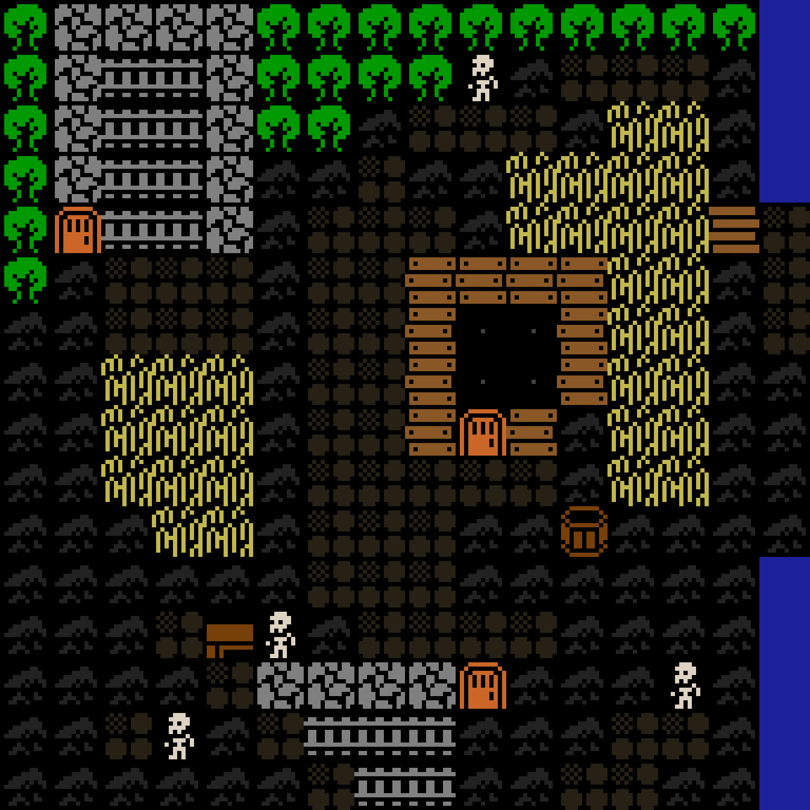

Post two · a project write-up
AI World Gen: thousands of tiny decisions, and a loop that graded them
A map generator that asks a model one question per tile. A new kind of model that answers in milliseconds for a fraction of a cent. And the evaluation loop that took it from a green blur to a village in eleven measured versions, most of them written by an agent.

A model that decides instead of writes
AI World Gen started at the AI Hackathon Barcelona 2026. The idea: describe a place, and watch an AI build its map one tile at a time. The interesting question was never "can a model draw a map". It was: given what is around this tile, what goes here? That question is asked hundreds of times per map.
Asking a chat model each time is slow, expensive, and turns a one-word answer into text you have to parse. Jev, made by TypeSafe, is a different kind of model. You send it a state (a JSON object describing the situation) and a typed question: pick one of these options. It answers with a probability for every option. It does not write text at all. It is built for speed (TypeSafe quotes tens of milliseconds for the model itself) and it is priced at about $0.04 per million input tokens, roughly fifty times less than the chat models I would otherwise have used for the same call. The exact bill is a section of its own below.
So the generator splits the work in two. One creative call goes to a language model, once per world: it invents the vocabulary, the six to twenty-four kinds of tile the described map is made of, with their rules. Then one decision goes to Jev, once per tile, with the vocabulary as the options and the map so far as the state.
From there it is a loop, and the loop is the design. Code picks the next cell, builds the state around it, and asks Jev one question. The answer is written into the map, and that map is the state of the next question: the model deciding the fifty-seventh cell sees the fifty-six cells decided before it. When no cell is left, the map is finished.
What it costs, really
Here is the bill. OpenRouter's usage page for the week in which all eleven versions were drawn, back-filled and re-drawn shows 39.2 thousand requests to Jev, 79.1 million tokens, and a spend of $3.11. That is 2,018 tokens per decision (the state with the whole map in it), $0.039 per million tokens, and $0.00008 per decision: about eight thousandths of a cent. A 16 by 16 map is 256 decisions, so $0.020. A full test run of 38 maps is 3,008 decisions, so $0.24. The language model, Claude Sonnet 5, was called 7 times that week to write vocabularies, and those 7 calls cost $0.33: one vocabulary costs about the same as 594 decisions. That price is what makes the rest of this post possible: a full run of 38 maps takes under ten minutes, so it can run before every change instead of once at the end.
The fair comparison is not Jev against a chat model, it is three ways of drawing the same map. One: a decision per cell with Jev, which is what the generator does. Two: the same per-cell loop with a chat model, sending the same state and asking for one word back. Three: one chat call that writes the whole 16 by 16 grid as JSON, which is what most people would build first.
Two things in that chart surprised me. The first is that the per-cell loop with a chat model is not absurd: with the cheapest models it costs about what Jev costs. Price alone does not justify a decision model. What does is everything around the price. Jev can only answer with one of the options you gave it, so there is nothing to parse and no invented tile type. It returns a probability for every option, which is what the inspector shows and what the sampling uses. And it is built to be fast: TypeSafe quotes tens of milliseconds for the model; the round trip from my laptop, through OpenRouter, measured about 0.35 seconds per decision in the evaluation runs, most of it network. A chat model answering a two-thousand-token prompt takes one to three seconds before it says its one word, so the same 256-cell map takes five to ten minutes instead of a minute and a half.
The second surprise is that the whole map in one call is cheap, too, and it sees everything at once, which is exactly what the per-cell model could not do until the blueprint gave it rooms. A chat model writing the grid in one go might well draw a better village. It might also return a 15 by 16 grid, or a tile type that does not exist, or a valid JSON document with a hole in the middle, and when it does, one failure loses the whole map. There is nothing to watch while it works, no probability behind any cell, and no way to ask again about one tile. The per-cell design is a bet that those properties are worth more than the model's view of the whole, and the blueprint is the admission that the view of the whole still had to come from somewhere. Code gives it for free.
The practical lesson is about the state. At $0.00008 per decision, the question "should I send the whole map in every call?" has an answer that costs nothing to try. The map sketch is about 300 tokens on a 16 by 16 grid, so sending it 256 times adds a few hundredths of a cent to the map. That is why version 5 could put the entire grid in every question and measure what it did, and why the state now carries a balance sheet, the missing landmarks and the excluded types. When each decision costs this little, the state is where you spend.
| Chat model | Input | Output | 256 calls, one per cell | One call, whole grid |
|---|---|---|---|---|
| Claude Sonnet 5 | $2.000 | $10.000 | $1.05 | $0.021 |
| GPT-5.2 | $1.750 | $14.000 | $0.93 | $0.027 |
| DeepSeek V4 Pro | $0.422 | $0.845 | $0.22 | $0.0024 |
| DeepSeek V4 Flash | $0.036 | $0.073 | $0.019 | $0.0002 |
| Jev 1.13 (measured) | $0.039 | – | $0.020 | – |
Per cell: a 2,000-token state and a 10-token answer, 256 times. Whole grid: a 2,500-token prompt (vocabulary, rules, instructions) and a 1,600-token JSON answer. Neither includes retries or reasoning tokens, which would raise the chat-model figures.
Version one was a green blur

The first version worked, in the sense that every call succeeded and a map came out. It was also useless. Thirteen of the fifteen maps in the first test set used one tile type for more than 85% of the cells: a village that is all grass, a station that is all corridor. The reason is obvious once you see it. A model that decides one cell from its neighbours, and whose neighbours are all grass, picks grass. Every correct local decision adds up to a wrong map.
I could have looked at three maps, changed the prompt, looked at three more, and felt good. I have done that before and I know how it ends: the change that fixes the village breaks the station, and nobody notices for a week. So before touching the generator, I built a way to measure it.
Measuring instead of looking
The measurement lives in Galtea, an evaluation platform for AI products (where I work, so take this paragraph as a demonstration of the tool as much as a recommendation). The shape of it is simple. A product has versions. A version is judged against written specifications: sentences about what a good map is. Each specification has metrics that score a map from 0 to 1, and a dataset of test cases. A test case here is one seed: a preset, a grid size, a fill order and a random seed, so every version draws the same 38 worlds.
Almost every metric is plain code in the project, not a model. "Doors sit in walls" is a loop over the door tiles. "One walkable region" is a flood fill. "The route reaches the edge" is a search. The one thing code cannot answer, "does this look like a village?", goes to a judge model, GPT-5.2, which reads the map as text and scores it. The specifications grew as the failures showed up: three at the start (barriers form structures, paths form routes, everything walkable is reachable), a fourth after version 4 ("a place reads as a place": doors in walls, walls as outlines, an enclosed room, ground in patches), and three more after version 7 (the vocabulary's own rules hold, routes lead to doors and off the map, the landmarks are there once and nothing floods the map). By the end there were 28 computed metrics and one judge.
Eleven versions in twenty hours
Version 1 was scored at 14:20 on 19 September. Version 11 at 09:49 the next morning. Each chart below is one specification, and each point is the mean score of that version over the same 38 seeds. The dotted grey chart is the judge. The numbers are in the table at the end.
The judge, which never saw a metric, agrees with the code: it moves from 0.09 on version 1 to 0.69 on version 11, and its two big steps land where the computed ones do, at the balance sheet (v2) and at the blueprint (v8). The story the charts tell, in order:
- v2 · confetti
- A balance sheet in the state, so the model knows which types are under-used. Coverage of the vocabulary went from 0.15 to 0.91, and the model placed the needed types anywhere: single walls, single path cells, nothing joined up.
- v3 · floods
- Continuation hints: "this wall line reaches you, continue it". The model did, across the whole map. 58 corridor cells in one 8 by 8 station.
- v4 · lines
- Code judges the one suggested continuation: short lines, closable gaps, never an over-used type. Walls form lines and closed shapes. But 21 of 23 doors stood in open ground, and no map had a room you could enter.
- v5 · the model reads the sketch, a little
- The whole map goes into the state, one letter per cell. Coherence moved from 0.50 to 0.53. The 16 by 16 maps showed the limit: walls still came as solid slabs, because a model deciding one cell cannot see where a rectangle should end.
- v6 · less noise
- The sampling had been overriding the model's own choice on 27% of the cells. Raising the floor to a third of the best option cut that to 18%: ground in patches 0.25 to 0.52, and the rare types lost their chances (coverage 0.72 to 0.54).
- v7 · the local rules hold, the rooms do not
- Typed placement rules (never next to X, only next to Y, on this edge) enforced in code before the question is asked. "Rules hold" went from 0.61 to 0.98. Nothing else moved: "never next to" cannot say "in a wall".
- v8 · rooms
- The blueprint. Code places each structure as a rectangle with a door before any cell is asked about, and each cell is only offered the types of its part: wall, door, interior, outside. Doors in walls 0.15 to 0.96; an enclosed room on every map; "a place reads as a place" 0.52 to 0.89. The price: coverage down to 0.52.
- v9 · the world remembers what it lacks
- The state names the things the world still misses; a unique landmark is out once placed; a route is suggested outside a planned door. Landmarks single 0.68 to 1.00, doors with a route 0.56 to 0.88.
- v10 · the cap that could not fire
- A ground type past twice its target is no longer offered. It changed nothing, because the maps that flooded were the settings whose vocabulary made the route the only floor: a corridor was the station's ground.
- v11 · a floor that is not a road
- The station gets an open deck, the city block a plaza, and corridor and street become lines. The station's route share fell from 0.53 to 0.12 of the map. The corridors are now short stubs on the deck, which is the next problem.


Regressions, and what the loop caught
Three things I would not have learnt from looking at pictures.
A new metric rewrites history. Version 1 scored 0.99 on "paths form routes", because a map that is all corridor has no isolated path cell. When the path-share metric arrived later and every old version was rescored, v1 fell to 0.74. A version table is only comparable if every row is scored with the same rules, so every new metric was run back over every old map, and every new test seed was drawn again with each old version's own code. Read the charts knowing that; the scores are today's rules applied to yesterday's maps.
Every fix costs something, and the loop shows you the bill. The sampling floor in v6 made calmer maps and starved the rare types. The blueprint in v8 gave the map rooms and took a third of its vocabulary coverage. Version 11 fixed the flooded station and turned its corridors into stubs: path continuity fell from 0.73 to 0.58 in the same run that raised path share from 0.65 to 0.84. None of these were visible in the one map I would have looked at. All of them were visible in the mean over 38.


A per-cell model cannot draw a rectangle. Seven versions tried to get rooms out of the prompt: more context, the whole map as text, softer sampling, typed rules. Doors stayed in fields. The eighth version stopped asking. Code places the buildings, the way a person drawing a map decides where the houses go before drawing the grass, and the model fills each part. That is the one change in the table that moved a specification by more than 0.3. The lesson generalises: give the model the decisions that are judgements (what stands in this room, who walks here) and give the code the decisions that are geometry.
The same maps, one call each
The cost chart above said the whole map in one call was cheap. Cheap is not the same as good, so I built it as a second mode of the generator and ran it through the same evaluation, as version v-llm. Same 38 seeds, same shipped vocabularies, same blueprint. The prompt gives Claude Sonnet 5 what the per-cell loop gives Jev, written once: every type with its rules and its target share, each planned room with its coordinates and the types its walls, door and inside allow, and the rules a good map follows. The model answers with the grid as rows of letters; a wrong shape or an unknown letter goes back to it with the list of problems, three attempts at most.
The first real call taught me something before it drew anything. Left with its default settings, the model spent its entire 6,000-token budget thinking about an 8 by 8 village and returned an empty string: 68 seconds, $0.064, nothing to parse. With thinking turned off, the same call took under four seconds and half a cent. Every number below is with thinking off.

On the map itself the single call loses, and it loses where I least expected. The plan is in its prompt room by room, with coordinates, and still only 47% of its maps hold an enclosed room, against 92% for the per-cell loop, and 60% of its doors sit in a wall against 87%. Writing 256 letters in one breath, the model drifts: a wall one column off, a door in the grass, a room that never closes. The per-cell loop cannot drift, because the blueprint is applied to each cell before the model is asked. The same holds for the typed rules, 0.76 against 0.99: Jev is never offered a type its rules forbid, and a text model breaks a few every map. Routes fell the most, 0.82 to 0.61, because its doors open onto nothing more often. It won on one specification, landmarks and story, 0.83 to 0.90: a model that sees the whole map places the one well and the one gate, where the per-cell loop still forgets them on half the maps (0.45 to 0.76). The judge, which reads the finished map and not the metrics, gives 0.65 against 0.69.
On time it wins outright: 3.7 seconds instead of 22 for an 8 by 8 map, 6 instead of 90 for 16 by 16, because 256 round trips become one. On money it is a tie: the whole run cost $0.25 in one call against $0.24 with Jev. The small map is cheaper with Jev ($0.005 against $0.006), because a 2,000-token prompt sent once costs more than 64 tiny decisions; the large map is cheaper in one call ($0.010 against $0.020), because the prompt does not grow with the map while the number of decisions does. Over the run, 46 calls did the work of 3,008, and 8 of the 38 maps needed a second answer because the first had the wrong number of rows or letters.
So which one? For a finished small map, fast, and a story that mentions every landmark, one call is the better tool, and it is now a switch in AI Setup. For rooms that close, doors in walls, rules that cannot be broken because the option was never offered, a map that fills in front of the reader, and the ability to ask again about one tile, the per-cell loop is the only one of the two that delivers. The honest summary is that the per-cell design was never justified by price; the two cost the same. It is justified by control, cell by cell, and the price of Jev is what makes that control affordable.
| Specification | v11, a decision per cell | v-llm, one call | Change |
|---|---|---|---|
| Structures | 0.98 | 0.94 | -0.04 |
| Paths | 0.77 | 0.75 | -0.02 |
| Reachable | 0.88 | 0.85 | -0.04 |
| Reads as a place | 0.88 | 0.74 | -0.14 |
| Rules hold | 0.99 | 0.76 | -0.23 |
| Routes to doors | 0.82 | 0.61 | -0.20 |
| Landmarks | 0.83 | 0.90 | +0.07 |
| Judge (GPT-5.2) | 0.69 | 0.65 | -0.04 |
Running the loop with an agent
Most of the eleven versions were written by an agent, Claude Code, working in a loop I set up and then mostly watched. One turn looked like this. Read the previous version's scores and the pictures where it lost. Write down one theory ("the model does not see enough of the map", "the sampling is adding noise", "the rules are prose, so they are advice"). Change the code with tests. Commit, so the version in Galtea records exactly what was measured. Run the 38 seeds. Compare. Write the result into the project's README, in one paragraph per version, so the next turn starts from the memory of this one.
My part was smaller and, I think, the part that mattered. I said which theory to test first. When I saw a failure the numbers missed, I asked for a specification for it, which is how four rules became seven. I set the budget: 8 by 8 grids for the bulk of the seeds, and only three 16 by 16 maps, because a room needs space to exist but a large map costs eight times a small one. And I said when to stop: when the agent could no longer name a change it was confident would move a number, the loop had done its work for now.
The agent also broke things. It once committed a version with a failing test, because a shell pipe hid the exit code. It once ran two evaluations against modules it was editing at the same time. Both were caught, one by the continuous integration check and one by the maps coming out wrong, and both became a written rule for the next turn. The loop is not a promise that every version is better. It is a promise that you will know.
What is still wrong
The corridors are stubs: a route between two doors is a shape, and shapes are the plan's job, so the next version should draw the paths the way it draws the rooms. Rooms are often empty, because the state says what the world lacks but not what a kitchen holds. Free-standing walls still split some maps in two. And rooms never share a wall, which real streets do all the time. Each of those has a number now, which is the point.
You can try the generator with your own OpenRouter key, read the code and the roadmap, or look at every map of every version, which are committed to the repository next to their scores.
The numbers
Mean score per specification over the same 38 seeds, with every metric as it stands today. A cell is highlighted when it moved by 0.05 or more against the previous version. The judge column is GPT-5.2 answering "how much does this map read as the setting?" on every map, from 0 to 1.
| Version | Barriers form structures | Paths form routes | Reachable and playable | A place reads as a place | The vocabulary's rules hold | Routes lead to doors | Landmarks and story | Judge |
|---|---|---|---|---|---|---|---|---|
| v1 | 0.18 | 0.74 | 0.69 | 0.48 | 0.83 | 1.00 | 0.07 | 0.09 |
| v2 | 0.39 | 0.53 | 0.75 | 0.43 | 0.58 | 0.77 | 0.61 | 0.24 |
| v3 | 0.68 | 0.66 | 0.82 | 0.50 | 0.49 | 0.62 | 0.79 | 0.45 |
| v4 | 0.82 | 0.80 | 0.77 | 0.50 | 0.62 | 0.66 | 0.66 | 0.48 |
| v5 | 0.93 | 0.82 | 0.81 | 0.53 | 0.49 | 0.70 | 0.76 | 0.54 |
| v6 | 0.95 | 0.81 | 0.81 | 0.51 | 0.61 | 0.60 | 0.68 | 0.48 |
| v7 | 0.95 | 0.80 | 0.82 | 0.52 | 0.99 | 0.61 | 0.78 | 0.48 |
| v8 | 0.99 | 0.75 | 0.84 | 0.89 | 0.99 | 0.78 | 0.77 | 0.65 |
| v9 | 0.98 | 0.80 | 0.87 | 0.87 | 0.98 | 0.87 | 0.84 | 0.69 |
| v10 | 0.98 | 0.78 | 0.87 | 0.88 | 0.99 | 0.86 | 0.83 | 0.71 |
| v11 | 0.98 | 0.77 | 0.88 | 0.88 | 0.99 | 0.82 | 0.83 | 0.69 |
v1's routes score is a mean over few maps, because v1 drew almost no doors, so there was little to judge. The judge was run on the older versions after the fact, at the time of writing, so that this column is complete.